Skyline now supports the ability to create custom advanced peak picking and scoring models for both selected reaction monitoring (SRM) and data-independent acquisition (DIA). This new feature aims to improve the accuracy and confidence of identifications in SRM-acquired data, and to enable large-scale automated processing of DIA datasets. This functionality can be applied to data collected on any instrument supported by Skyline (including QQQ, TOF and ion trap instruments from AB SCIEX, Agilent, Bruker, Thermo and Waters) provided the data was acquired through SRM, PRM or DIA.
When chromatograms are imported into a document, Skyline has traditionally chosen a best peak for each targeted peptide based on simple heuristics involving intensity, crude measures of co-elution, and the presence of matching isotopic standards. Over the last several years, however, sophisticated algorithms have been developed for more accurately choosing peaks in SRM data, and for quantifying the confidence that a peak corresponds to the targeted peptide. The mProphet algorithm1 evaluates peaks based on a trained linear combination of scores related to co-elution, peak shape, ion intensity, spectral library relative product ion abundance correlation, predicted retention time, isotopic standards, and several other factors. More recently, OpenSWATH2 (http://proteomics.ethz.ch/openswath.html) has added additional scores to aid in the analysis of DIA data, where peak selection is significantly more challenging due to the use of wide isolation windows, and where peptide identification confidence metrics will be required to analyze whole-proteome datasets.
Although Skyline continues to score peaks heuristically on initial import, we now allow the user to improve on what Skyline does by default by training and customizing scoring models based on mProphet and OpenSWATH.
In this tutorial, you will learn to train and customize a peak scoring model, as well as how to use the models to improve Skyline peak integration boundary selection and assign a confidence level to the association between the peak and its target peptide.
To start this tutorial, download the following ZIP file:
https://skyline.gs.washington.edu/tutorials/PeakPicking.zip
Extract the files in it to a folder on your computer, like:
C:\Users\brendanx\Documents
This will create a new folder:
C:\Users\brendanx\Documents\PeakPicking
It will contain all the files necessary for this tutorial. Open the file SRMCourse_DosR-hDP__20130501-tutorial-empty.sky in this folder, either by double-clicking on it in Windows Explorer, or by choosing Open from the File menu (Ctrl-O) in a running instance of Skyline.
The skyline document you have opened should be blank aside from a list of target proteins and peptides. You will be importing and scoring some SRM data, but before you do, it is necessary to generate decoy peptides. Decoy peptides are peptide sequences that are not actually present in the sample but are measured in order to provide a negative control, which mProphet requires in order to assign confidence levels to the peaks it picks. Several methods for generating decoy peptides exist, including shifting the precursor and product mass-to-charge ratios of actual peptides, reversing the sequence of actual peptides, or randomly shuffling the sequences of actual peptides. For this tutorial, you will use reversed sequence decoys. Generally, mProphet works best if the number of decoys is comparable to the number of targets, or at least not radically smaller. To add the decoys:
The Add Decoy Peptides form should now look like this:
A set of decoy peptides should appear below the real peptides in the Targets view of the main Skyline window:

The decoy peptides you have just generated include random shifts in product mass (this is done in addition to reversing the peptide sequence to avoid overlap with real transitions) and thus cannot be used in this particular dataset because they do not to match the decoy peptides used in the SRM experiment. In a real SRM workflow, you would generate decoys before acquiring the data, so that the measured decoys matched the ones in Skyline. In this tutorial you will open another file with the decoy peptides that were actually measured for this experiment.
To import raw SRM data collected on an AB SCIEX QTRAP instrument into this document, do the following:
Skyline will show a form suggesting that it can remove the common prefix on these files:

Once loading is complete, chromatograms will be displayed for both the target (real) and decoy peptides.
Note that the Skyline default peak picking has selected an intense peak at 16.5 minutes, whereas (as you will see later) the correct peak is actually at 18.0 minutes, close to the predicted retention time, annotated at 18.2 minutes in the graph.

Next you will train a scoring model and use it to improve Skyline peptide peak picking:
You should see the following form:

A large form should appear.
You should be presented with a screen that looks like this:

This form allows you to create and customize new peak scoring models, rather than always relying on the default heuristic Skyline Legacy scoring model. On the right is a graph of the composite score assigned to each decoy peak (orange bars) and each target peak (blue bars) by the model. A higher score indicates greater likelihood that the peak represents the correct peptide. The orange curve is a Gaussian fit of the decoy distribution as described in the mProphet algorithm1. Note that most of the target peptides are to the far right of the decoy curve, indicating that the model assigns high confidence to these peak assignments. Whenever training a model, it is important to check that the decoy distribution is roughly Gaussian (the orange bars match the orange curve). If the distribution differs greatly from a Gaussian, the mProphet statistical results will not be valid. If you discover that your decoy distribution is very different from a Gaussian, it may be useful to try a different method of generating decoys, or to use one of the many ways of customizing the model (described later). Additional tabs show further statistical information:
This will show the distribution of p values according to the Gaussian model to which the decoys were fit:

This graph is another way to assess whether decoys are Gaussian: if they are, the p values of the decoys should be uniformly distributed over the range from 0 to 1. The targets, on the other hand, should have a uniform background (indicating chromatograms where there is no real peak) but also a spike near zero indicating the real peaks. Also shown is pi-zero, which is an estimate of the background rate of nulls. This pi-zero value is important in assigning a false discovery rate (q value) to each chosen peak. You can also see the q values themselves:
This will show a graph of the q values assigned to all the targets:

For a given FDR cut-off, any q value below the FDR value will be declared a true peak, and any q value above the FDR value will be declared a false peak.
In the bottom left is the list of Available feature scores that can contribute to the composite score. The meaning of the scores is as follows (more details can be found in the original mProphet and OpenSWATH papers1,2):
| Score Name | Score Description |
| Intensity | Log10(summed intensity) of all transition peaks in the precursor |
| Retention time difference | Abs(predicted RT - measured RT) |
| Library intensity dot product | Dot product between library spectrum and observed spectrum |
| Shape (weighted) | Weighted shape similarity between transitions (see mProphet paper) |
| Co-elution (weighted) | Weighted co-elution between transitions (see mProphet paper) |
| Co-elution count | Number of co-eluting transitions |
| Signal to noise | Log10(signal/noise ratio), defined as peak apex to background median |
| Product mass error | Product mass error weighted by intensity |
| Reference intensity dot product | Dot product between analyte and reference transition intensities |
| Reference shape (weighted) | Weighted shape correlation between reference and analyte (see mProphet paper) |
| Reference co-elution (weighted) | Weighted co-elution (autocorrelation shift) between reference and analyte (see mProphet paper) |
| Reference co-elution count | Number co-eluting reference transitions times |
| Precursor-product shape score | Correlation between most intense precursor and most intense product ion |
| Precursor mass error | Mass error over precursor ions weighted by intensity |
| Precursor isotope dot product | Dot product between expected and observed precursor isotope distribution |
| Identified count | Number of identified peptides within the peak boundaries |
Scores that do not apply are grayed and blanked out, e.g. the Product mass error score is grayed here, because Skyline only calculates mass errors for chromatograms extracted from high resolution mass spectra. Scores that are undefined for at least one peptide are also grayed. The Weight of each score is the coefficient assigned to it in the composite score. However, the weights are not normalized (i.e. they can have very different scales), so Skyline also shows a normalized measure (Percentage Contribution) that gives a rough indication of the relative contribution of each score to the separation of decoys from targets. Using this measure, you can see that, of the available scores, the Shape (weighted) score is the strongest single contributor to the separation of targets from decoys (accounting for 62.2%).
You can also visually examine the performance of each score:
As indicated by the title, the graph now shows the Intensity score for all peptides. Clicking on each row of the Available feature scores grid will change the graph to show the scores for that row. Looking at individual scores helps to visualize which calculators are useful and which are not, and will also help you to track down missing values:
The graph should change to the following:

Note that the library dot-product is “unknown” for several of the target values, and for this reason the score is grayed and not used in the model. This is also the case for several other scores – some are missing values for every peptide, while others are missing values for only a few peptides.
To find and remove the peptides missing library dot-product values, do the following:
A find button () should appear.
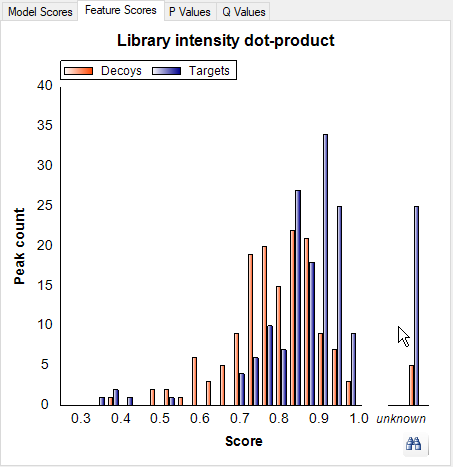
A Find Results view should appear in the background, docked at the bottom of the Skyline window and containing a list of the peptides for which the Library intensity dot-product score is unknown. In this case, there are 6 peptides that are missing this score, 5 target peptides and 1 decoy peptide. Each peptide is measured in 5 files, so there are a total of 30 missing peaks for these scores. To use the Find Results view, save your current model and return to the Skyline main window:
Make sure that you do NOT click OK on the Reintegrate form, as that would apply the model to all the peaks in the document, which we are not yet ready to do. (If you did, click Undo now.)
On the Find Results dialog, there should be 6 peptides in the list.
Skyline should navigate to the peptide LGGNEQVTR in the Targets view.
Note that this peptide has no library spectrum, explaining why its Library intensity dot-product is unknown. Since scores are disabled when one or more values are missing, you must deal with all 6 peptides shown in the Find Results view to make the Library intensity dot-product score active. This first peptide appears under the ‘iRTpeptides’ list. While it is one of the 11 peptides in the iRT mix used in this experiment, it was obviously not included in the iRT calculator for this document. In the Targets view, it lacks the tiny clock icon (in the upper-right corner of the peptide icon) indicating an iRT standard peptide. Skyline automatically excludes standard peptides from scoring consideration. Although, in this document, all of the other iRT peptides have matching library spectra. To handle this case now, delete this peptide:
Proceed to the next peptide in the list:
You will find this peptide in a list named ‘PosCtrl’ with two other peptides which lack matching library spectra. These are also standard peptides, added to the document before Skyline supported document-wide peptide standards. Skyline will ignore any peptide standard (iRT, Normalization or QC) in score training. So, here you can simply mark these peptides as QC standards to avoid having to delete them from the document:
Now delete the last two peptides GGYAGMLVGSVGETVAQLAR and its corresponding decoy:
Now return to the Edit Peak Scoring Model form:
Note that the Library intensity dot-product score is no longer grayed. All 4 Reference scores are also no longer grayed. Four of the peptides you found in the list were also missing stable isotope labeled reference standards. You deleted one, the extraneous iRT peptide, and marked the other 3 as QC standards, which caused them to be excluded from this score modeling. Without missing values in the document, these scores are now available for use in a scoring model. To retrain the model to include them, do the following:
The Library intensity dot-product score should now have a weight and a percent contribution, and scoring should be slightly improved. The Edit Peak Scoring Model form should look like this:

The Q Values plot will now be improved as well:
You should see a graph like the following:
As you can see, most of the q values are now smaller after adding the new scores, indicating higher confidence in the picked peaks.
Next, this tutorial will cover options to customize and refine a peak scoring model.
Notice the check boxes in the Enabled column of the Available feature scores list. Unchecking a score will remove it from the model upon re-training, which allows you to pick and choose which scores are used. Scores which make a negative contribution (and thus may be advisable to remove) are shown in red.
Now notice the Use decoys and Use second best peaks check boxes in the Training section of the form. These check boxes designate which peaks are used as controls in training the model. So far you have used the decoy peptides that were generated prior to data acquisition. An alternative method is to examine the second highest scoring peaks in the chromatograms of the real peptides, based on the high probability that these are not the correct peaks but may in some ways be more realistic representations of incorrect peaks than the peaks found in chromatograms for decoy peptides. Or, you can use both types of peak. To try this, do the following:
The yellow bars represent the second best peaks. Note that the distribution of second best peaks is similar to the distribution of decoys, suggesting that they do an equally good job representing realistic background. When the model is retrained, both the decoys and the second best peaks will be used in the training. Note that none of these changes have taken effect yet. For this to happen, you must re-train the model:
The graphs should now update and the scores that were unchecked should be removed. The model should look like this:
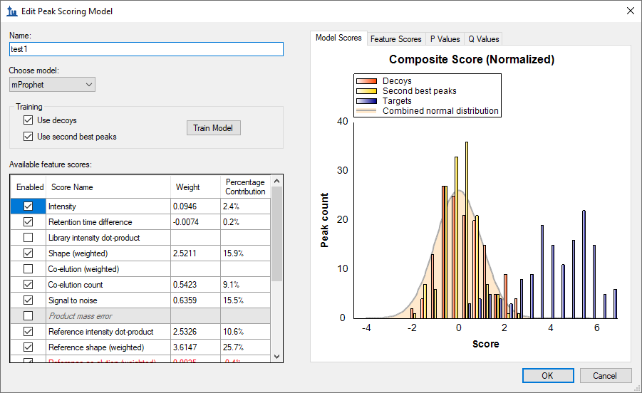
You will not use this modified model. To return to the original model, simply cancel the form:
The next step is to apply the trained model to the peaks picked by Skyline. Having just closed the Edit Peak Scoring Model form, you should be back in the Reintegrate form. You are now ready to apply the model you have just trained. You have the option to use the highest scoring peaks, using the composite score you have just trained, in all cases (Overwrite manual integration), or to leave in place any peaks that have been picked manually (which may have been carefully curated). Checking Add q value annotation will cause a statistical q value to be attached to every peak, which can then be exported in a Skyline report. In this tutorial you will use both of these options:
The Reintegrate dialog box should look like this:
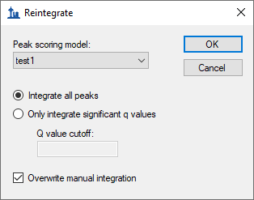
A form displaying a progress bar should appear and after a few seconds the reintegration should complete.
Note that after reintegration, the chosen peak for this peptide/replicate is now at the correct position of 18.0 minutes.
Now try reintegrating in a slightly different way by doing the following:
This will cause Skyline to pick only peaks with an estimated false discovery rate (q value) of 0.001 or lower (i.e. there is a 99.9% chance that any chosen peak is correct). In peptides for which no detected peak meets this criterion, Skyline will not choose any peak. In the Targets view, a peptide with no chosen peak will have a red dot left of its sequence:
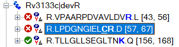
This is now the case for the peptide LPDGNGIELCR in the replicate 006_StC-DosR_B2. You will also see that the chromatogram graph now lacks the right-pointing arrowheads, indicating the chosen peak:
This can be different for each replicate, however, and if you use the Replicates dropdown list at the top of the Targets view to review each replicate for this peptide, you will see that 4 out of 5 (007, 008, 009 and 010) have chosen the correct peak, while the last replicate (006) has no chosen peak. This is likely due to the apparent interference on the y10 ion in the analyte precursor, which you can see better, if you select it (622.3086++) in the Targets view and zoom in a little:
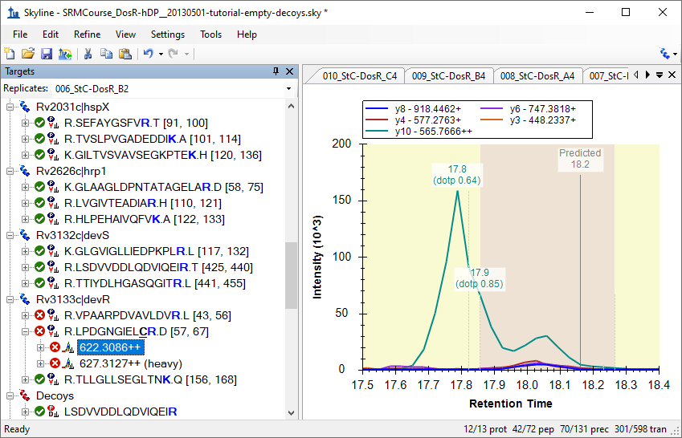
Any peak picking algorithm might do better with this peak, if the y10 ion were removed.
To directly see the scores and false discovery rates of each peptide, you can export this information to a text file. There are two options for doing this. The first is to export into mProphet format, which shows all the individual feature scores for each peptide, as well as the composite score, the p value, and the q value. The second is to use a skyline report, which can attach a q value to any data columns available in the report form. You will start with the first method:
The Export mProphet Features form should look like this:
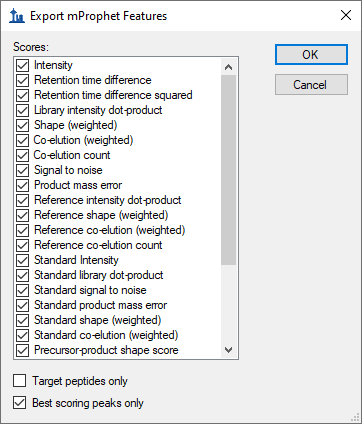
A form with a progress bar may appear, and after a few seconds the file should be saved.
There should be a series of columns containing information about each peptide, and a list of individual scores for that peptide. There should also be a column called “qValue”, which contains the estimated false discovery rate if all peptides with q value at least as good as this peptide are counted as real.
You can also obtain q-value information from a Skyline report, if you have checked the Add q value annotation check box in the Reintegrate form. This method does not show individual feature scores, but has the advantage that you can combine it with any other columns available in a Skyline report.
The form should look like this:
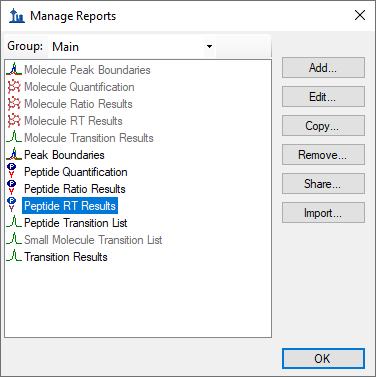
The Edit Report form should appear as follows:
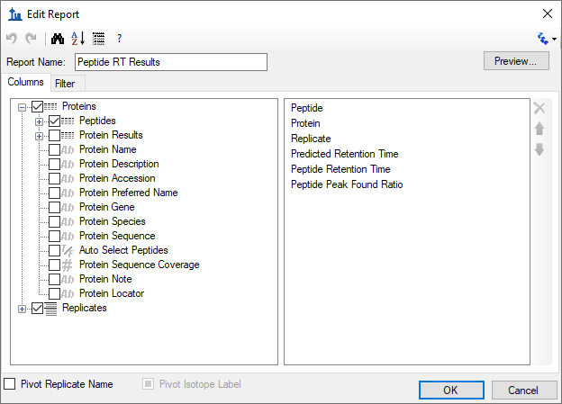
The Edit Report form should now look like this:
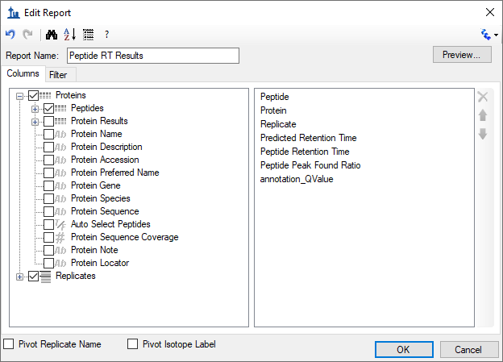
A form with a progress bar may appear, and after a few seconds the file should be saved.
There should be a series of columns containing information about each peptide, including file name, peptide sequence, and so forth. There should also be a column called “qValue”, which contains the estimated false discovery rate just as the mProphet exported file did.
The Skyline development team is working to make this info about peptide ID confidence available within Skyline (perhaps visible on the chromatogram graph), so that the text export step described above is not necessary. However, for now, exporting to text (via either method) is the only way to directly obtain information on peptide ID confidence.
In addition to SRM, Skyline trained peak scoring models can also be used to improve the accuracy and assess the confidence of peak identifications in DIA data. Peak scoring a statistical confidence metric is even more essential with DIA data, since there can be a greater number of interfering peaks and potentially a larger number of peptides to analyze (for whole-proteome DIA experiments), making manual assessment of each peptide less tractable.
To open the DIA dataset included with this tutorial, do the following:
This file contains some of the data that was used to test the OpenSWATH algorithm, some of which is now incorporated into the advanced peak scoring model functionality you are exploring. The file contains a dilution series of a known peptide mix. In a real DIA workflow, the settings on the Transition Settings - Full Scan tab would need to be configured for DIA; decoys would need to be generated, and the raw DIA data would need to be imported. However, since raw DIA data files are so large (hundreds of Megabytes to several Gigabytes), for this tutorial the file you have opened only contains target peptide chromatograms extracted from 5 DIA raw files, which allows to reduce the Skyline file size significantly.
The DIA files you will be opening contain peaks that were manually picked for the purpose of comparison with the automated OpenSWATH algorithm. In a real workflow all peptides/files would contain full chromatograms, but in this tutorial the chromatograms have been artificially restricted to a 10 minute window around the predicted peak in order to keep the file sizes small.
This DIA data was loaded into Skyline before advanced peak scoring was available, so the first step will be to re-score the document so that the proper feature scores are available. This re-scoring must be performed on any document created before Skyline v2.1.1.xx in order to use advanced peak picking:
A form like the following should appear:
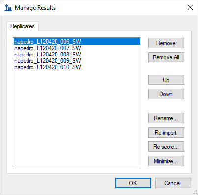
The following form should appear:
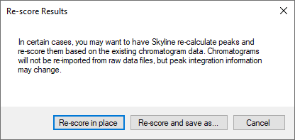
A chromatogram load window will appear as all five replicates are re-scored. Wait for the loading to complete. Advanced feature scores will now be available.
Do the following to return to the Edit Peak Scoring Model form:
This will show the model from the previous dataset, applied to the peptides in the present dataset.
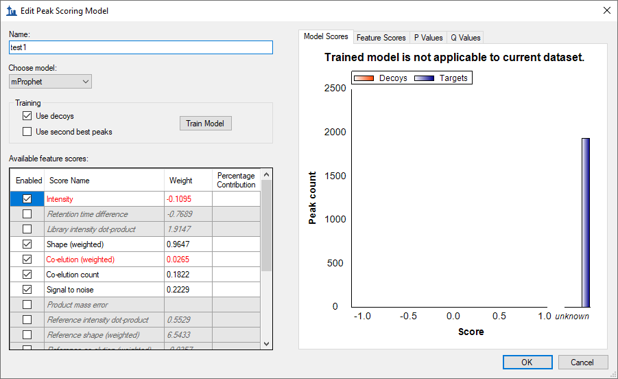
A model trained on one dataset can be applied to another, or you can train a new model for each dataset, provided your dataset contains enough peptides. Because the previous model was trained on SRM data, which contained isotopic standards, it is not applicable to the current dataset. You can see that the graph title says Trained model is not applicable to current dataset. Also, some of the scores (e.g. Retention time difference) have weights but are grayed, indicating that the model needs these scores to evaluate peptides, but they are not available, meaning that the composite model score is undefined.
You will need to train a new model specifically for this dataset to use advanced peak picking. Perform the following steps to do this:
The model should look like this:
Note that some of the scores that were unavailable in the SRM model are available here, such as Product mass error. This is because the current DIA dataset has chromatograms extracted from high resolution full-scan mass spectra. As for the SRM data set, we can increase the number of active scores by finding and deleting peptides with unknown scores.
A Find Results Form should appear behind the Edit Peak Scoring Model window, showing many peptides that lack a library dot product. You won’t remove them in this tutorial, but your own data sets you could. Instead, you can use the model as is to peak peaks as follows:
Now you can apply the model as you did before for the SRM dataset:
Skyline should adjust peak boundaries as it did before.
The Skyline team is actively working to improve advanced peak picking beyond the capabilities offered in this tutorial, particularly with regard to handling missing values and more directly displaying q values (peptide identification confidence), and we encourage you to watch for improvements in the future. This tutorial should however provide enough basics to get started on advanced peak picking for DIA and SRM data sets, allowing selection of peaks to be greatly improved over the Skyline default peak picking.
1. Reiter, L. et al. mProphet: automated data processing and statistical validation for large-scale SRM experiments. Nat. Methods 8, 430–435 (2011).
2. Hannes L. Röst et al. OpenSWATH: A tool for the automated, targeted analysis of data-independent acquisition (DIA) MS-data. Nat. Biotechnol. doi:accepted